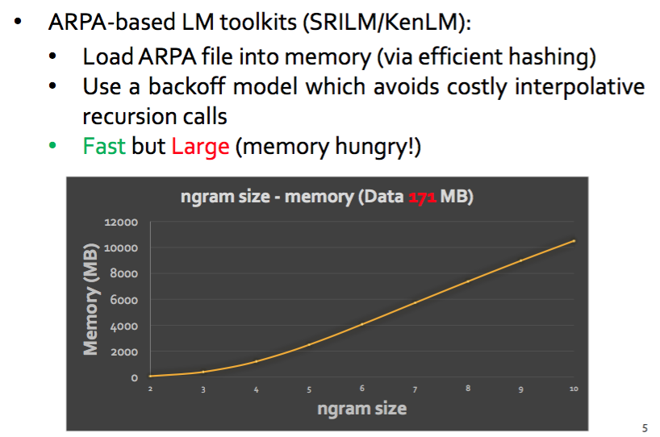
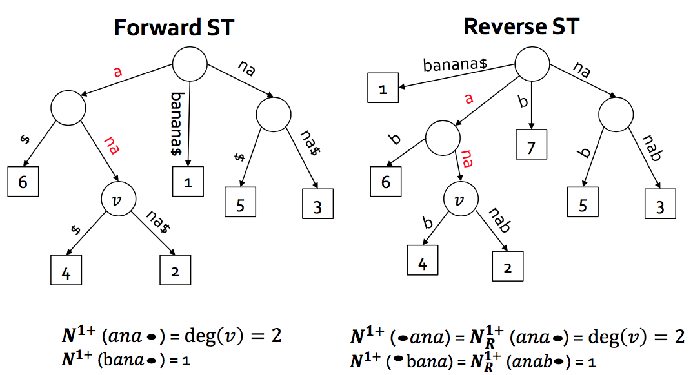
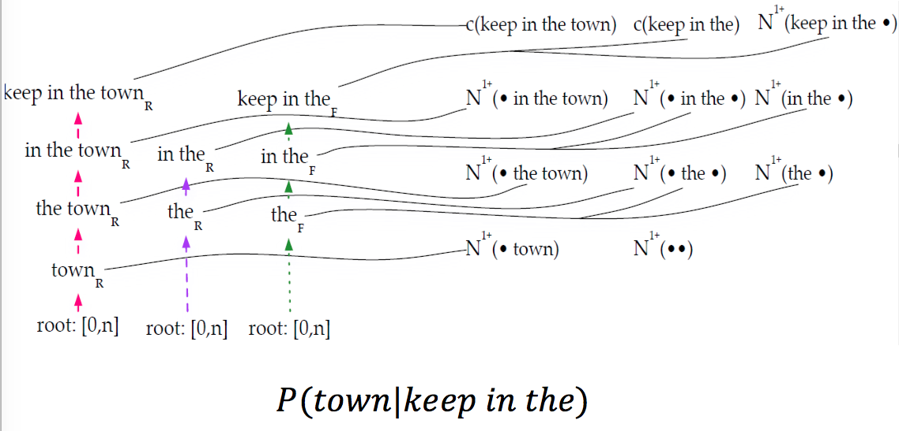
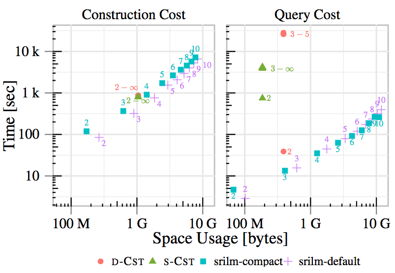

Compressed Suffix Trees for Machine Translation
Matthias Petri The University of Melbourne
joint work with Ehsan Shareghi, Gholamreza Haffari and Trevor Cohn
Machine Translation
Use computational resources to translate a sentence from a source language to a target language.
Resources
- Parallel Text Corpus
- Wikipedia headlines in multiple languages
- European Parliament or UN transcripts
- Large Text Corpus in the target language
- Lots of data sets available for free http://www.statmt.org/wmt15/translation-task.html
Translation Process
Given a Source sentence find a translation (the Target) that has the highest probability given the source sentence:
$$P(\text{ Target }| \text{ Source }) = \frac{P(Target) \times P( \text{ Source } | \text{ Target })}{P(Source)}$$
P(Source | Target)
Find probable candidates using the Parallel Corpus
| Language A |
Language B |
Word Alignment |
| lo que [X,1] que los |
the [X,1] that the |
0-0 1-2 3-2 4-3 |
| lo que [X,1] que los |
this [X,1] that the |
0-0 3-2 4-3 |
| lo que [X,1] que los |
which [X,1] the |
0-0 1-0 4-2 |
P(Target)
For each candidate sentence, use the text statistics of the monolingual corpus (a Language Model) to determine the "best" translation
q-gram Language Modeling
Assign a probability to a sequence of words \(w^n_1\)
indicating how likely the sequence is, given a language:
$$
P(w^n_1) = \prod_{i=1}^n P(w_i|w_{i-q+1}^{i-1})
$$
where
$$
w^n_1 = S[1..n] \text{ and } w^j_i = S[i..j]
$$
Example (q=3)
$$
P(\text{ the old night keeper keeps the keep in the town }) = \\
P(\text{ the} ) \\
\times P(\text{ old }|\text{ the }) \\
\times P(\text{ night }|\text{ the old }) \\
\times P(\text{ keeper }|\text{ the old night }) \\
\times P(\text{ keeps }|\text{ old night keeper }) \\
\times P(\text{ the }|\text{ night keeper keeps }) \\
\times P(\text{ keep }|\text{ keeper keeps the }) \\
\times P(\text{ in }|\text{ keeps the keep }) \\
\times P(\text{ the }|\text{ the keep in }) \\
\times P(\text{ town }|\text{ keep in the }) \\
$$
Kneser-Ney Language Modeling
Highest Level:
$$
P(w_i|w_{i-q+1}^{i-1})=\frac{max(C(w_{i-q+1}^i))−D_q,0)}{C(w_{i-q+1}^{i-1})} + \frac{D_q N_{1+}(w_{i-q+1}^{i-1} \bullet )}{C(w_{i-q+1}^{i-1})} P(w_i|w_{i-n+2}^{i-1})
$$
Middle Level (\(1 < k < q\)):
$$
P(w_i|w_{i-k+1}^{i-1})=\frac{max(N_{1+}(\bullet w_{i-k+1}^i))−D_k,0)}{N_{1+}(\bullet w_{i-k+1}^{i-1}\bullet)} + \frac{D_k N_{1+}(w_{i-k+1}^{i-1} \bullet )}{N_{1+}(\bullet w_{i-k+1}^{i-1}\bullet)} P(w_i|w_{i-k+2}^{i-1})
$$
Lowest Level:
$$
P(w_i) = \frac{N_{1+}(\bullet w_{i})}{N_{1+}(\bullet \bullet)}
$$
Terminology
- \(C(w_{i}^j)\): Standard count of \(S[i..j]\) in the corpus
- \(N_{1+}(\bullet \alpha) = |\{w: c(w \alpha)>0\}|\)
is the number of observed word types preceding the pattern \(\alpha = w_{i}^j\)
- \(N_{1+}(\alpha \bullet ) = |\{w: c(\alpha w)>0\}|\)
is the number of observed word types following the pattern \(\alpha\)
- \(N_{1+}(\bullet \alpha \bullet)\): the number of unique contexts (left and right) where \(\alpha \) occurs
- \(D_i\): Discount parameter for the recursion computed at index construction time
- \(N_{1+}(\bullet \bullet)\): Number of unique bi-grams
- \(N_{1}(\alpha \bullet) = |\{w: c(\alpha w)==1\}|\)
is the number of observed word types preceding the pattern \(\alpha = w_{i}^j\) that occur exactly once
- \(N_{2}(\alpha \bullet) = |\{w: c(\alpha w)==2\}|\)
is the number of observed word types preceding the pattern \(\alpha = w_{i}^j\) that occur exactly two times
- \(N_{3+}(\alpha \bullet ) = |\{w: c(\alpha w)\geq3\}|\)
is the number of observed word types following the pattern \(\alpha\) that occur at least 3 times
ARPA based Language Models

Instead of precomputation can we compute probabilities on the fly using Compressed Suffix Trees?
Advantages
- No restriction in recursion depth results in better probability estimates
-
Current approaches prestore probabilities which uses space exponential in q
-
Construction of a CST is faster than precomputing all probabilities
-
Can operate on words and character alphabets (need larger q to be useful)
Use 2 CSTs over the text and reverse text

Kneser-Ney Language Modeling

Perform backward search and keep track of dependencies
Computing \(N_{1+}(\bullet w_{i}^j \bullet)\)
Naive Approach: (Expensive!)
- Find the set S of all symbols preceding \(w_{i}^j\)
- For each \(\alpha \in S\) determine \(N_{1+}(\alpha w_{i}^j \bullet)\)
- Sum over all \(\alpha\)
Only use one wavelet tree based CST over the text
- \(N_{1+}(w_{i}^j \bullet)\) computed as before using the CST
-
\(N_{1+}( \bullet w_{i}^j)\): For the range \([sp,ep]\) of the pattern use the wavelet tree to visit all leaves in \(BWT[sp,ep]\). (Interval Symbols in SDSL)
-
\(N_{1+}( \bullet w_{i}^j \bullet )\): Visiting all leaves in \(BWT[sp,ep]\) implicitly computes all Weiner Links of the CST node corresponding to \(w_{i}^j\) as all [sp,ep] ranges of all \(\bullet w_{i}^j\) are computed during the wavelet tree traversal.
-
Determine number of children of the determined nodes to compute \(N_{1+}( \bullet w_{i}^j \bullet )\).
Other Considerations
- Special case when pattern search ends in the middle of an edge in the CST
-
Special handling of start and end of sentence tags which can mess up the correct counts
-
Ensure correctness by comparing to state-of-the-art systems (KenLM and SRILM)
Construction and Query Time

Future Work
- Precomputing some of the counts is very cheap and speeds up query processing significantly
- Alphabet-Partitioning for larger alphabets (requires interval symbols)
- Already competitive to state-of-the-art implementations
- Backward Search now main cost factor
- Lots of open problems in the MT field where succinct structures could be applied to
- Easy entry as test collections and software are freely available